.gif) It seems we've landed!
It seems we've landed! It seems we've landed!
"If you bundle those conversations together, the diagnosis is clear: there is so much convenience, but so little comfort. Everyone is tired. Our attention is over-extended, over-stimulated, and over-commodified, making us twitchy, unfocused, and, in a very crude sense, afraid."
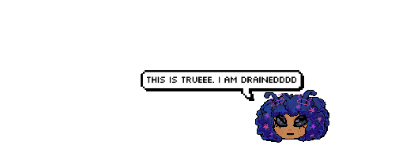
"Blindly chasing after convenience, amusement, and connection wasn’t all it was set up to be, and it certainly didn’t make life any less complicated. We know that digital technology isn’t going anywhere because of its obvious benefits, so the primary question becomes: how do we fix the way technology fits? Is there a way to keep some of the benefits and diminish the damage? What stays? What goes? Why? And how can we begin to change that fit in our own lives?"
"This seems to be the case with social media companies, where, right now, what they need and what’s good for society seem to be in conflict. They are wedged between maximizing profits by capturing, retaining, and funneling the majority of the web’s attention, while holding the increasingly forced pose of free speech. Meanwhile, there’s increasing evidence, even from Facebook’s own research, that says social media depresses its users and that automated, algorithmic recommendations of content promotes extremism."
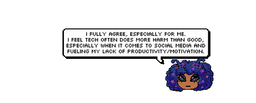
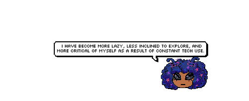
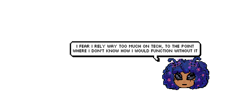
"I love going to the library, and encourage my friends to visit every time I get the chance. At first, they think this is a very uncool recommendation, but they change their minds when I show them the room at the library where I work."
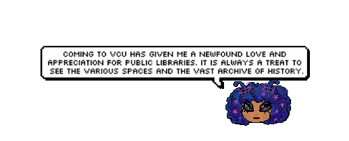
"I once heard that a library is one of the few remaining places that cares more about you than your wallet. It means that a person can be a person there: not a customer, not a user, not an economic agent, not a pair of eyes to monetize, but a citizen and community-member, a reader and a thinker, a mind and—God, I am going to say it—a soul."
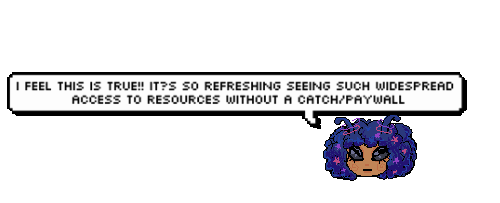
"In 1963, demolition began on the building, to be replaced by Madison Square Garden. The underground stops were left and are still functional—that’s what you see when you visit the station today. Penn Station went from a building worthy of comparison to Europe’s great feats of architecture to a hole in the ground."
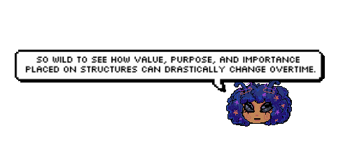
"Another reason for the comparison is to remind you that we have both commercial and non-commercial elements in our lives. Each has their role, but we shouldn’t misapply commercial approaches to all our needs."
"This seems to be the case with social media companies, where, right now, what they need and what’s good for society seem to be in conflict. They are wedged between maximizing profits by capturing, retaining, and funneling the majority of the web’s attention, while holding the increasingly forced pose of free speech. Meanwhile, there’s increasing evidence, even from Facebook’s own research, that says social media depresses its users and that automated, algorithmic recommendations of content promotes extremism."
"The web commercialization project has been the boom of our age, and the commercial yawp has become the dominant tone of our technology. It’s loud out there. We’re exhausted and over-extended, because everything is vying for nearly boundless amounts of our time and attention. Late last year, Netflix CEO Reed Hastings said their biggest competition was sleep. That’s a pretty grim statement, joke or not. Biology is always such a nuisance for business."
"As companies scaled, more and more of the web became monetized. Interactivity cleared a path for transactional thinking because of their striking resemblance. (Let’s remember that pay-per-click is the origin of both Google’s and Facebook’s fortunes.) Helpful personal sites and informational hubs have been replaced by content marketing. Even in places where no money changes hands, follows and likes act as representations of worth, just like money. That’s not to say you can’t ask for money, though—even the dogs I follow on Instagram are trying to sell me stuff. No species is safe from salesmanship."
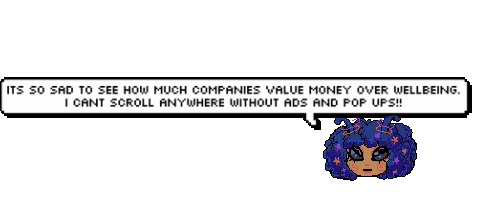
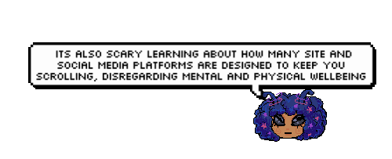
"I think a lot of the anxiety we can feel from technology comes from that passive relationship alongside its speed. Look at cable news or your social media feeds. All day long, we’re having absurd novelty, enviable affluence, and sincere tragedy and distress sandwiched together and railgunned into our face. A book offers some necessary composure and consistency to help find our bearings in a world oriented toward violent delivery. "
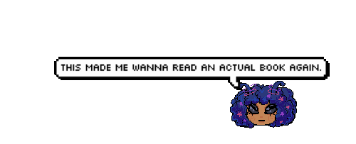
"It seems our alone time with technology should truly be alone time, and that halfway socializing is a source of disappointment, not pleasure."
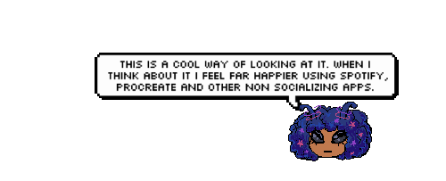